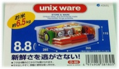

LSS: Secure Linux containers
While the Linux Security Summit (LSS) was held later in the week, it was logically part of the minisummits that accompanied the Kernel Summit—organizer James Morris made a forward-reference report on LSS as part of the minisummit reports. Day one was filled with talks on various topics of interest to the assembled security developers, while day two was mostly devoted to reports from the kernel security subsystems. We plan to write up much of LSS over the coming weeks; the first installment covers a talk given by SELinux developer Dan Walsh on secure Linux containers.

Walsh's opening slide had a picture of a "secure" Linux container (label seen at right)—a plastic "unix ware" storage container—but his talk was a tad more serious. Application sandboxes are becoming more common for isolating general-purpose applications from each other. There are a variety of Linux tools that can be used to create sandboxes, including seccomp, SELinux, the Java virtual machine, and virtualization. The idea behind sandboxing is the age-old concept of "defense in depth".
There is another mechanism that can be used to isolate applications: containers. When most people think of containers, they think of LXC, which is a command-line tool created by IBM. But, the Linux kernel knows nothing about containers, per se, and LXC is built atop Linux namespaces. The secure containers project did not use LXC directly; instead it uses libvirt-lxc.
Using namespaces, child processes can have an entirely different view of the system than does the parent. Namespaces are not all that new, RHEL5 and Fedora 6 used the pam_namespace to partition logins into "secret" vs. "top secret" for example. The SELinux sandbox also used namespaces and was available in RHEL6 and Fedora 8. More recently, Fedora 17 uses systemd which has PrivateTmp and PrivateNetwork directives for unit files that can be used to give services their own view of /tmp or the network. There are 20-30 services in Fedora 17 that are running with their own /tmp, Walsh said.
In addition, Red Hat offers the OpenShift service which allows anyone to have their own Apache webserver for free on Red Hat servers. It is meant to remove the management aspect so that developers can concentrate on developing web applications that can eventually be deployed elsewhere. Since there are many different Apache instances running on the OpenShift servers, sandboxing is used to keep them from interfering with each other.
There are several different kinds of namespaces in Linux. The mount namespace gives processes their own view of the filesystem, while the PID namespace gives them their own set of process IDs. The IPC and Network namespaces allow for private views of those resources, and the UTS namespace allows the processes to have their own host and domain names. The UID namespace is another that is not yet available, and one that concerns Walsh because of its intrusiveness. It would give a private set of UIDs, such that UID 0 inside of the namespace is not the same as root outside.
Secure Linux containers uses libvirt-lxc to set up namespaces that effectively create containers to hold processes that are isolated from those in other containers. Libvirt-lxc has a C API, but also has bindings for several different higher-level languages. It can set up a container, with a firewall, SELinux type enforcement (TE) and multi-category security (MCS), bind mounts that pass through to the host filesystem, and so on. Once that is done, it can start an init process (systemd in this case) inside the container so that it appears to be almost a full Linux system inside the container. In addition, these containers can be managed using control groups (cgroups) so that no one container can monopolize resources like memory or CPU.
But, libvirt-lxc has a complex API that is XML-based. Walsh wanted something simpler, so he created libvirt-sandbox with a key-value based configuration. He intends to replace the SELinux sandbox using libvirt-sandbox, but it is not quite ready for that yet.
To make things even easier, Walsh created a Python script that makes it "dirt simple" for an administrator to build a container or set of containers. He said that Red Hat is famous for building "cool tools that no one uses" because they are too complicated, so he set out to make something very simple to use.
The tool can be used as follows:
virt-sandbox-service create -C -u httpd.service.apache1
That call will do multiple things under the covers. It creates a systemd
unit file for the container, which means that standard systemd commands can
be used to manage it. In addition, if someone puts a GUI on systemd
someday, administrators can use that to manage their containers, he said.
It also
creates the filesystems for the container. It does not use a full
chroot(), Walsh said, because he wants to be able to share
/usr between containers. For this use case (an Apache web server
container), he wants the individual containers to pick up any updates that
come from doing a yum update on the host.
It also clones the /var and /etc configuration files into its own copy. In a perfect world, the container would bind mount over /etc, but it can't do that, partly because /etc has so many needed configuration files ("/etc is a cesspool of garbage" was his colorful way of describing that). In addition, it allocates a unique SELinux MCS label that restricts the processes inside the container. "Containers are not for security", he said, because root inside the container can always escape, so the container gets wrapped in SELinux to restrict it.
Once the container has been created, it can be started with:
virt-sandbox-service start apache1
Similarly, the stop command can terminate the container. One can
also use the connect command to get a shell in the container.
virt-sandbox-service execute -C ifconfig apache1
will run a command in the container. For example, there is no
separate cron running in each of the containers, instead the
execute is used to do things like logrotate from the
host's cron.
The systemd unit file that gets created can start and stop multiple container instances with a single command. Beyond that, using the ReloadPropagatedFrom directive in the unit file will allow an update of the host's apache package to restart all of the servers in the containers. So:
systemctl reload httpd.service
will trigger a reload in all container instances, while:
systemctl start http@.service
will start up all such services (which means all of the defined containers).
This is all recent work, Walsh said. It works "relatively well", but still needs work. There are other use cases for these containers, beyond just the OpenShift-like example he used. For instance, the Fedora project uses Mock to build packages, and Mock runs as root. That means there are some 3000 Fedora packagers who could do "bad stuff" on the build systems, so putting Mock into a secure container would provide better security. Another possibility would be to run customer processes (e.g. Hadoop) on a GlusterFS node. Another service that Walsh has containerized is MySQL, and more are possible.
Walsh demonstrated virt-sandbox-service at the end of his talk. He demonstrated some of the differences inside and outside of the container, including a surprising answer to getenforce inside the container. It reports that SELinux is disabled, but that is a lie, he said, to stop various scripts from trying to do SELinux things within the container. In addition, he showed that the eth0 device inside the container did not even appear in the host's ifconfig output (nor, of course, did the host's wlan0 appear in the container).
A number of steps have been taken to try to prevent root from breaking out
of the container, but there is more to be done. Both mount and
mknod will fail inside the container for example. These
containers are not as secure as full virtualization, Walsh said, but they are
much easier to manage than handling the multiple full operating systems that
virtualization requires. For many use cases, secure containers may be the
right fit.
| Index entries for this article | |
|---|---|
| Security | Containers |
| Security | Security Enhanced Linux (SELinux) |
| Conference | Linux Security Summit/2012 |
Posted Sep 7, 2012 9:56 UTC (Fri)
by danpb (subscriber, #4831)
[Link]
One small clarification here. Traditional usage of full virtualization implied full operating system installs in each guest. The libvirt-sandbox toolkit though actually has the ability to construct its sandboxes with a choice of either LXC or KVM without code changes on the application's part. When asked to construct a sandbox with KVM, it'll build a mini initrd which uses the virtio-9p filesystem module to expose the host root filesystem readonly inside KVM, and then setup custom writable areas for places like /var/, /tmp, etc in the same way it does for LXC. So, if desired, you can get the extra security benefit of full virtualization, albeit at the cost of greater resource utilization due to running multiple kernels.
Posted Sep 7, 2012 13:03 UTC (Fri)
by dowdle (subscriber, #659)
[Link] (2 responses)
LSS = Linux Secure Containers BUT later in the article it says that it isn't about security... and that root in a container can always break out. What?
I'm a long time OpenVZ user... since 2005 and I use it on a daily basis. OpenVZ isn't the only virtualization solution I use because containers don't fit every use case. I also use KVM. Anyway, Virtuozzo (the commercial parent product of OpenVZ) started in 2001 but was born, developed and matured as an out-of-mainline aka third-party kernel patch. OpenVZ was born as an open source project in 2005... and has been widely deployed by hobbyists and large hosting companies alike. It allows chopping up a single system into containers and giving root access to the containers to untrusted parties... like a customer in another country... or your brother-in-law. It has had live and offline migration features since 2008. I've not seen nor heard about OpenVZ being the cause of a system compromise where a container root user got out and had access to either the host node nor other containers... not in the 7 years it has been widely deployed.
SWsoft later became Parallels and along the way invested considerable effort into kernel development with a lot of bug fixes actually making it upstream. The dream of Parallels has always been that LXC would eventually mature and that they could drop their kernel patches and focus their management tools on LXC. Unfortunately that hasn't happened. LXC seems to be a combination of a bunch of container related features that are developed separately by sponsoring companies who only care about their sub-set of features / use cases... without much in the way of co-ordination to build a complete container solution. There are a handful of people who work on LXC trying to bring it all together and they have been somewhat successful, but here we are years later... and it looks like LXC hasn't even gotten to the 50 yard line yet... and that OpenVZ will be around for several years yet. Parallels noticed and has been trying to liberate more of their code both into the mainline kernel and as userspace.
First they were called a VE (Virtual Environments), then the name changed to VPS (Virtual Private Servers) and finally... now we call them a container. In the case of OpenVZ, each container is a stand alone distribution. There can be some sharing with the host and among containers but most people don't do it that way. LSS seems to be focusing on making their containers, so far as the filesystem is concerned, as light-weight as possible by sharing as much with the host and among containers as possible. While that might be an admirable goal... containers, being primarily server / text-only oriented, aren't really bulky to begin with. A typical container is well under CD size and usually takes less than a minute to create... and a few seconds to start. Updating the host and having that cascade out to the containers might sound great but it also means there is a single point of failure too... and a single failed upgrade (admittedly quite rare) breaks everything. It isn't really difficult to loop through a set of containers to update them. What if a container user doesn't want to switch to a new version? Keeping containers autonomous also means they are easier to migrate from one host to another in that your hosts don't have to be exactly alike. As I said, I've been running OpenVZ for a long time and I have some older containers that have been on RHEL4-based hosts, moved to RHEL5-based hosts, and are now on RHEL6-based hosts. That was possible and painless because the containers aren't tied to the host.
Wow, I think I've been rambling for a while now. Sorry. My point is that it is sad that when most people think of containers (according to this article) they think of LXC... because when I think of LXC I think of how incomplete it is... and that I long for the day when I can have a completely functional container using LXC. For the foreseeable future though, I'll happily live in sin with OpenVZ.
Posted Sep 7, 2012 22:53 UTC (Fri)
by dlang (guest, #313)
[Link]
Posted Sep 10, 2012 14:27 UTC (Mon)
by jamesmorris (subscriber, #82698)
[Link]
Posted Sep 8, 2012 8:02 UTC (Sat)
by thomas.poulsen (subscriber, #22480)
[Link] (2 responses)
Posted Sep 8, 2012 19:44 UTC (Sat)
by mezcalero (subscriber, #45103)
[Link] (1 responses)
And then there is some additional confusion about how far the containerization goes. For example, there is container as in "run a more or less complete OS that is installed in a subdirectory of the FS tree", i.e. a chroot() on steroids. And then there is container as in "share the same root dir as the host OS but hide stuff/make things read-only but boot up the more or less full OS in it". And then there is container as in "share the same root dir as the host OS and hide stuff/make things ready only but do not boot an OS up in the container, just run one service".
And then there is confusion about who implements the containerization bits. For example, systemd service files can do the "shared root dir" containerization (i.e. the third kind) out-of-the-box but we never use the term "container" for that. LSS is an implementation of the second kind. libvirt and systemd-nspawn can be used for the first kind.
Summary: the term "container" on Linux means many different things, and there are many different implementations of them. I am sorry for the admins who have to deal with all this confusion. Some overview documentation would be good I guess, and maybe finding better terminology for these three kinds of containers, and maybe trying to consolidate more of these techs.
Posted Sep 27, 2012 8:21 UTC (Thu)
by justincormack (subscriber, #70439)
[Link]
I suspect most serious users (ie not just running for testing and so on) will probably have to dive in and customise the setup to run the kind of container they want, depending on what they want to share, as clearly one policy does not fit all.
LSS: Secure Linux containers
> they are much easier to manage than handling the multiple full operating
> systems that virtualization requires. For many use cases, secure
> containers may be the right fit.
LSS: Secure Linux containers
LSS: Secure Linux containers
LSS: Secure Linux containers
Thanks for a great article.LSS: Secure Linux containers
I for one would be thrilled by a LWN article on the
current status of the available sandboxing / container / jail solutions on Linux from a user / administrator point of view.
Perhaps with a view to freeBSD jails as well.
LSS: Secure Linux containers
LSS: Secure Linux containers